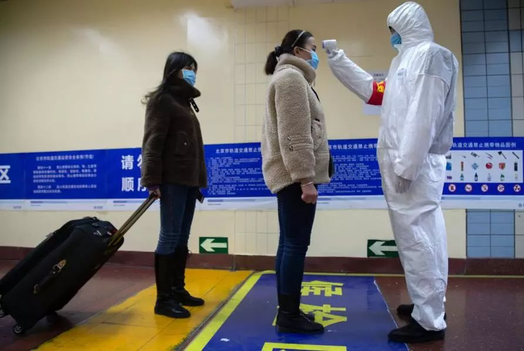

全球口罩总动员：法国和日本的工厂24小时不停工
原文链接 备份链接 来源：图虫 记者：卢奕贝 编辑：牙韩翔 “ 疫情影响之下全球防护设备，尤其是口罩供不应求。这让所有口罩生产商的工厂都开始忙碌起来。 ” 一家名为Kolmi Hopen的公司突然收到了一大笔订单——5亿个口罩。 这家位于 …

尽管市场已经消化了短期需求下降和供应链短暂中断的因素，但更广泛的间接影响还没有被消化。 每个人都认为，如果需求回升，一切都会反弹；但以往的事件表明，并非每家公司都会以同样的方式受益

*******文 | 《巴伦》撰稿人瑞什马·帕迪亚(Reshma Kapadia)*******
*******编辑 | 张晓添*******
随着中国全力应对致命的冠状病毒，世界第二大经济体实际上已暂时陷入停滞。将近6000 万人被隔离，大部分商店和生产线仍然关闭。即使病毒得到控制，许多公司面临的意外连带影响仍然存在。
这次疫情爆发导致6 万多人感染，1300 多人死亡，引起了难以估量的不利影响。在公司层面，这种痛苦不只局限于高度依赖中国市场的公司，或是在武汉有运营设施的公司。武汉是此次疫情的中心。
这座城市是汽车、电子元件和半导体生产的中心，但它也是一个交通枢纽——很像芝加哥——这使其对全球供应链更为重要。结论是：生产中断可能波及一系列行业，并有可能影响全年的销售和利润。
与旅游业相关的公司正遭受着其中最严重的不利影响。中国大约有1300万人航空出现被取消，达美航空(DAL)和其他公司已经暂停飞往大陆的航班，直至3月。随着预订关键期即将到来，邮轮运营商正面临巨大压力。由于澳门关闭赌场，永利度假村(WYNN)每天损失260万美元。
普信新亚洲基金(T.Rowe Price New Asia Fund)经理Anh Lu表示，尽管市场已经消化了短期需求下降和供应链短暂中断的因素，但更广泛的间接影响还没有被消化。“每个人都认为，如果需求回升，一切都会反弹，但以往的事件表明，并非每家公司都会以同样的方式受益。” 她说。
接下来的几个星期将决定病毒是否被控制。许多基金经理预计，一旦疫情看起来得到控制，工厂重启，那么市场将大幅反弹。德意志银行预计，全年全球经济增长将减少0.2%，其中一部分将在2021年恢复。
据报道，中国领导人已经呼吁放松限制，但生产仍然停顿并且许多工人滞留。零部件无法供应——或者由于短缺，公司无法为劳动者提供所需的口罩。投资研究机构Gavekal Research分析师安德鲁·巴特森(Andrew Batson)和Ernan Cui表示，即使在最乐观的情况下，即企业运营逐渐重启，这也将是自2008年全球金融危机以来中国经济增长面临的最严重冲击。
随着生产恢复，基金经理们将寻找机会，但会是选择性地。拥有定价权的公司或许能够与客户分摊病毒疫情相关成本，例如为弥补时间损失而支付加班费或者加快订单。但实力较弱的公司可能会看到利润率恶化，而那些背负大量杠杆负担的公司可能很难熬过哪怕是最初的影响。
瑞银全球财富管理在给客户的一份报告中推荐了一种短期策略，该策略倾向于现金流强劲的高股息公司，同时避开亚洲地区脆弱的公司。以下是分析师和基金经理们正在密切关注其疲软迹象的一些公司。
消费类
多年来，满足中国消费者需求的公司一直是许多全球基金经理投资组合中的一个亮点。但是它们远远无法独善其身。以酒类公司为例。农历新年是酒类消费的大好时机，零售商、酒吧和餐馆都预先准备了大量存货。但大多数大型集会都被取消了，而这些消失的需求不太可能恢复。库存在很长一段时间内都不需要补充。
“即使人们恢复外出，制造商也可能在一段时间内得不到新订单。” Vontobel国际权益策略基金联席经理唐尼·克兰森(Donny Kranson)表示。今年迄今为止，烈酒制造商帝亚吉欧(DEO)的股价下跌了3.7%，而百威亚太控股(1876.香港)下跌了11%。后者是啤酒制造商百威英博的亚太区子公司。
这次疫情的爆发也可能改变人们对外出就餐的态度。被新兴市场投资者普遍看好的美团点评(3690.香港)，已经从上个月的高点下跌了12%。Bernstein分析师David Dai说，只有大约20%到30%的餐厅启动了外卖服务，而且多数营业餐厅的外卖数量似乎下降了50%甚至更多。
被投资者广泛持有的奢侈品零售商和化妆品公司，如酩悦轩尼诗路易威登(MC.法国)和雅诗兰黛(EL)，也不会毫发无损。随着中国旅游业的直线下滑，世界各地最时尚街道上的奢侈品商店没有多少顾客。路易威登估计，销售受到的打击不算太严重，同时下调了下半财年的利润预期，不过该公司预计。但该公司预计，一旦旅行恢复，销售将出现反弹。从长期来看，疫情不太可能让中国消费者放弃对奢侈品的偏爱，但就目前而言，基金经理们正在寻找市场中比较便宜的地方，比如工业领域。
工业
在病毒疫情之前，该板块在全球经济复苏势头之下处于有利位置，而经济学家们仍然预计将出现一轮复苏，只是时间上有所推迟。加拿大皇家银行分析师迪恩·德雷(Deane Dray)在最近的一份报告中写道，尽管近期工业企业面临需求减弱以及供应链中断的风险，但大多数企业在2020年展望中还没有充分体现病毒疫情的影响。有两个例外: 艾默生电气 (EMR)和Xylem (XYL)。前者估计，如果工厂在2月10日重新开工，销售额将受到约5000万至1亿美元的影响，或者二季度预期收入减少1.5%。如果开工时间再往后推延，影响会更大。后者认为，一季度的每股盈利可能会减少3至4美分。
科技
与中国5G建设相关的公司也可能受到冲击，这一领域依赖于政府开支，但政府可能需要把重点放在其它优先事项上。此外，总部位于香港的券商里昂证券(CLSA)董事总经理马修·西格尔(Matthew Sigel)表示，武汉素以“中国光谷”闻名，这里相当一部分光学元件供应链所在地。中国计划在2020年底之前使60万到65万个5G基站投入运营，这些供应链对这一计划至关重要。
希格尔表示，如果中国政府继续在武汉实施旅行和商业限制，“我们可能会看到华尔街下调部分手机和5G供应链的盈利预期，并且/或者延后到2021年”。全球最大的手机芯片和调制解调器制造商高通(QCOM)警告称，其手机需求和供应链存在“重大不确定性”。
他补充道，印制电路板、光纤和显示器等组件的生产面临的风险最大，而LCD、内存和中国汽车科技企业可能更具韧劲。
高盛指出，半导体和科技硬件公司是这个板块中对中国市场风险敞口最大的，大中华区营收占比分别达到47%和14%。
这两个领域的估值在疫情爆发前就已经体现了一些好消息——有迹象表明，半导体产业即将走出低迷，市场对苹果(AAPL)的盈利增长预期有所改善。疫情的爆发给这些假设蒙上了一层阴影。
苹果已经关闭了其在中国大陆的所有门店和公司办公室，并面临着严重的供应中断风险，其近一半的生产和供应商位于中国。虽然外界此前预计iPhone的组装商富士康科技过去一周复产，但报道显示其一些工厂将继续关闭，另外一些工厂只有10%的劳动力在运转。投行Cowen分析师克里斯·桑卡尔(Krish Sankar)估计，从2月10日开始，企业活动每推后一周，消失的iPhone或相关服务销售就会使每股盈利减少2美分。
根据Evercore ISI分析师阿米特·达亚纳尼(Amit Daryanani)的说法，苹果已经在其展望中考虑了一些疫情冲击因素，从而缓和了一些风险。达亚纳尼指出的其他有必要密切观察的公司包括Amphenol (APH)，其大约30%的销售额与中国有关；惠普(HPQ)，其70%的制造工人在中国；戴尔(DELL)，其一半以上的供应商在中国。
花旗中国互联网分析师艾丽西亚·雅普(Alicia Yap)概括了当地投资者的谨慎态度:“我们会耐心等待更好的买入点，并在兴奋过头之前评估估值的下行风险。”
翻译 | 小彩；版权声明：《巴伦》(barronschina)原创文章，未经许可，不得转载。


责编 | 黄端 duanhuang@caijing.com.cn

原文链接 备份链接 来源：图虫 记者：卢奕贝 编辑：牙韩翔 “ 疫情影响之下全球防护设备，尤其是口罩供不应求。这让所有口罩生产商的工厂都开始忙碌起来。 ” 一家名为Kolmi Hopen的公司突然收到了一大笔订单——5亿个口罩。 这家位于 …
原文链接 备份链接 现在我的妈妈再和我视频，我会告诉她，事实证明她看到的电视新闻是假的。儿子在上海很安全就是最好的证明。尽管她还是每天看电视新闻，但真的不哭了。 口述 | 塔瑞克 整理 | 姜浩峰 我是塔瑞克（Tariq），上海师范大学本 …
原文链接 备份链接 题记：“影响大众想象力的，并不是事实本身，而是它扩散和传播的方式。” ——古斯塔夫·勒庞《乌合之众》 世卫组织近日将此次新冠病毒带来恐慌和混乱的问题称为“信息疫情”（Infodemic），并指出“社交媒体上散布着大量有 …
原文链接 备份链接 基于疫情冲击的现实情况，可以优先落实医疗用品等相关协议内容的执行，并在保证中方正常权益的情况下，推动双方在延伸领域的技术合作和人员交流，将疫情转化为双边的合作契机 徐奇渊 | 文 当前，疫情已经对中国宏观经济运行产生了 …
原文链接 备份链接 2020年全球GDP年增长率受疫情影响将降低0.2%左右几天前，新西兰渔民们把刚刚捕来的共100多吨大龙虾放生大海。当地媒体报道，中国传统春节是新西兰龙虾出口最畅销的时候，但今年受新冠状病毒疫情影响，中国客户纷纷取消 …